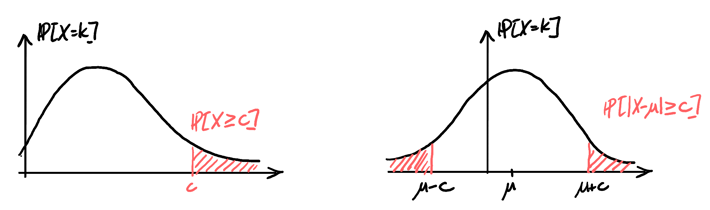

Concentration Inequalities
Table of Contents
1. Concentration Inequalities
Concentration inequalities allow us to bound tail probabilities or quantify derivations from the mean:

In real scenarios, we often have finite sample sizes, so we would like to quantify the uncertainty in our estimations.
1.1. Indicator Random Variables
The indicator random variable for an event \(A\) is defined as:
\begin{align} I_A(\omega) = \begin{cases} 1 & \omega \in A \\ 0 & \omega \not\in A \end{cases} \end{align}In other words, it returns \(1\) if the event \(\omega\) is contained in \(A\), and \(0\) otherwise.
The expectation and variance of an indicator random variable is:
\begin{align} \mathbb{E}[I_A] &= p \\ \text{Var}(I_A) &= p(1-p) \end{align}Lemma: Let \(X\) be a non-negative random variable. Then, for all \(\omega \in \Omega\) and for all constants \(c > 0\),
\begin{align} X(\omega) \geq cI_{\{X\geq c\}}(\omega) \end{align}Proof: We know that the event \(X \geq c\) is \(\{\omega \in \Omega | X(\omega)\geq c\}\). Then, we have 2 cases:
Case 1: \(X(\omega) < c \Rightarrow I_{\{X\geq c\}}(\omega) = 0\). Since \(X\) is non-negative, we have \(X(\omega) \geq cI_{\{X\geq c\}}(\omega)=0\).
Case 2: \(X(\omega) \geq c \Rightarrow I_{\{X\geq c\}}(\omega)=1\), so \(X(\omega) \geq cI_{\{X\geq c\}}(\omega)=c\).
Since both cases satisfy the lemma, we are done. \(\square\)
1.2. Markov’s Inequality
Markov’s inequality states that if \(X\) is a non-negative random variable with \(\mathbb{E}[|X|] < \infty\), then for all constants \(c > 0\),
\begin{align} \boxed{\mathbb{P}[X\geq c] \leq \frac{\mathbb{E}[X]}{c}} \end{align}Proof: By the previous section’s lemma, we know that \(X(\omega) \geq cI_{\{X\geq c\}}(\omega)\). Then, we have
\begin{align} X(\omega) &\geq cI_{\{X\geq c\}}(\omega) \notag \\ \sum_{\omega}X(\omega)\mathbb{P}[\omega] &\geq \sum_{\omega}cI_{\{X\geq c\}}(\omega)\mathbb{P}[\omega] \notag \\ \mathbb{E}[X] &\geq c\mathbb{E}[I_{\{X\geq c\}}] = c\mathbb{P}[X\geq c] \quad \square \notag \end{align}1.3. Chebyshev’s Inequality
Chebyshev’s inequality is a stronger and more generalized form of Markov’s inequality. For all random variables \(X\) with \(\mathbb{E}[X]=\mu < \infty\) and for all constants \(c>0\),
\begin{align} \boxed{\mathbb{P}[|X-\mu|\geq c] \leq \frac{\text{Var}(X)}{c^2}} \end{align}Proof: We know that \(|X-\mu|\geq c \Rightarrow |X_\mu|^2 \geq c^2\). Then, by Markov’s inequality,
\begin{align} \mathbb{P}[|X-\mu|\geq c] &= \mathbb{P}[|X-\mu|^2 \geq c^2] \notag \\ &\leq \frac{\mathbb{E}[|X-\mu|^2]}{c^2} \notag \\ &= \frac{\text{Var}(X)}{c^2} \quad \square \notag \end{align}2. Estimating the Mean of a Distribution
Suppose \(X_1, \dots, X_n\) are i.i.d. random variables from some distribution, and \(\mathbb{E}[X_i]=\mu\) and \(\text{Var}(X_i) = \sigma^2\) for all \(i=1,\dots,n\). Suppose that \(\mu\) is unknown, whereas \(\sigma^2\) is known, and our goal is to estimate \(\mu\).
Let \(S_n=X_1 + \cdots + X_n\). Then \(\mathbb{E}\left[\frac{S_n}{n}\right]=\mu\). Call \(\hat{\mu}_n\) the estimator equal to \(\hat{\mu}_n=\frac{S_n}{n}\). The question is, what sample size \(n\) should one use to achieve a desired error control with confidence \(1-\delta\)?
By Chebyshev’s inequality, we know that
\begin{align} \mathbb{P}[|\hat{\mu}_n-\mu|\geq \epsilon] \leq \frac{\text{Var}(\hat{\mu}_n)}{\epsilon^2} \notag \end{align}The variance \(\text{Var}(\hat{\mu}_n)\) can be calculated like so:
\begin{align} \text{Var}(\hat{\mu}_n) = \frac{1}{n^2}\left(\text{Var}(X_1) + \text{Var}(X_2) + \cdots + \text{Var}(X_n)\right) = \frac{\sigma^2}{n} \notag \end{align}Thus, we have
\begin{align} \frac{\sigma^2}{\epsilon^2 n} \leq \delta \notag \end{align}Rearranging, we find that:
\begin{align} \boxed{n \geq \frac{\sigma^2}{\epsilon^2\delta}} \notag \end{align}2.1. Weak Law of Large Numbers
The weak Law of Large Numbers states that if \(X_1, X_2, \dots\) are a sequence of i.i.d. random variables with a finite mean \(\mu\) and a finite variance° \(\sigma^2\), and \(S_n=X_1+ \cdots + X_n\), then for all \(\epsilon > 0\),
\begin{align} \boxed{\lim_{n\to \infty} \mathbb{P}\left[\left|\frac{S_n}{n}-\mu\right|>\epsilon\right] = 0} \end{align}Proof: By Chebyshev’s inequality, we know that
\begin{align} \mathbb{P}\left[\left|\frac{S_n}{n}-\mu\right|>\epsilon\right] &\leq \frac{\text{Var}\left(\frac{S_n}{n}\right)}{\epsilon^2} \notag \\ &= \frac{\frac{1}{n^2}\left(\text{Var}(X_1)+\text{Var}(X_2) + \cdots + \text{Var}(X_n)\right)}{\epsilon^2} \notag \\ &= \frac{\sigma^2}{\epsilon^2n} \notag \end{align}Then, as \(n\rightarrow\infty\), the expression \(\frac{\sigma^2}{\epsilon^2n}\rightarrow 0\). \(\square\)